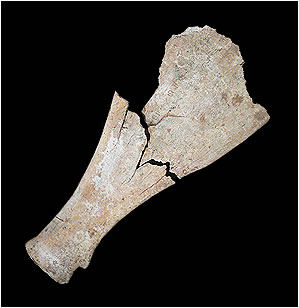

How were oracle bones used? Oracle bones provide us with one of the earliest examples of writing in Ancient China. They also have given historians useful information about the Shang dynasty. Oracle bones were usually made from the shoulder blades of oxen, or sometimes the shell of a tortoise was used. They were used to divine the future. |